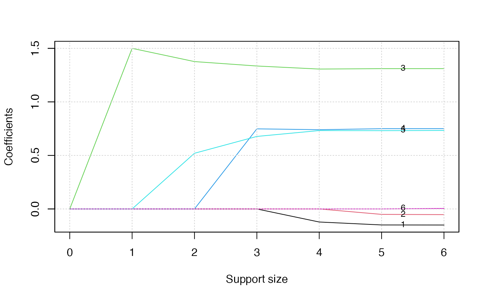
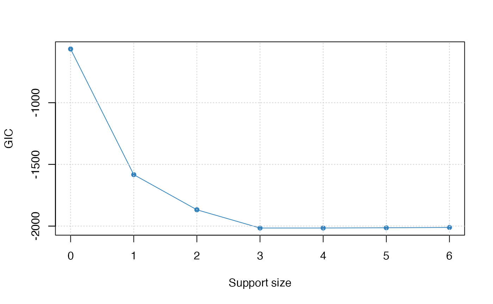
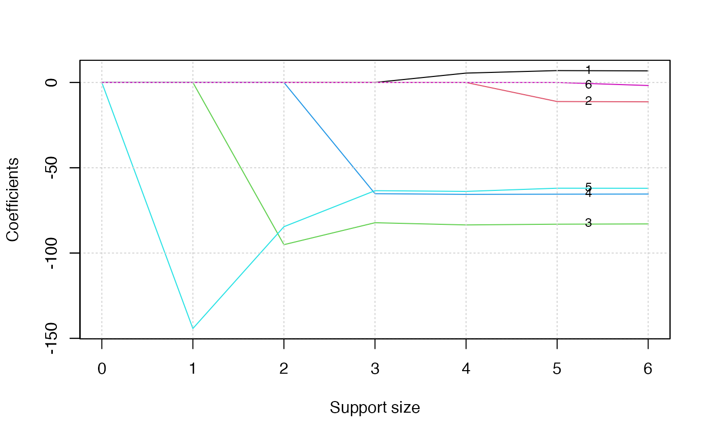
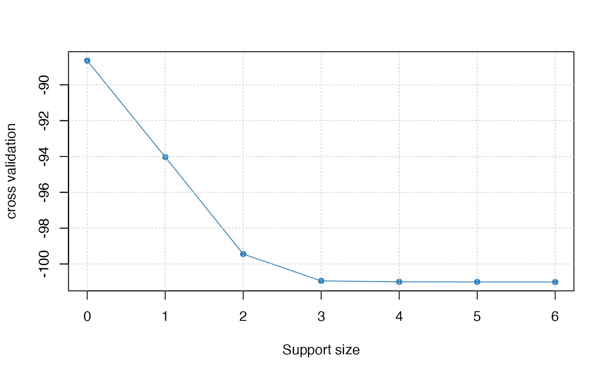

../vignettes/v04-PoissonGammaReg.Rmd
v04-PoissonGammaReg.RmdPoisson regression involves regression models in which the response variable is in the form of counts. For example, the count of number of car accidents or number of customers in line at a reception desk. The response variable is assumed to be generated from Poisson distribution.
The Poisson regression is defined as \[
\log(E(y_i|x_i)) = x_i^T \beta.
\] We generate some artificial data using the following logic. Consider a dataset containing the information of complain calls about 100 companies over a period of 10 years. count gives the number of complains, and the dataset also have other variables like age, sex, job, education, region, marriage. The generate.data() function allow you to generate simulated data. By specifying support.size = 3, here we set only 3 of the 5 above mentioned variable have effect on the expectation of the response count.
library(abess)
dat <- generate.data(n = 100, p = 6, support.size = 3,family = "poisson")
colnames(dat$x) <- c("age", "sex", "job",
"education", "region", "marriage")
dat$beta## [1] 0.0000000 0.0000000 1.3161226 0.7623454 0.6557793 0.0000000
head(dat$x)## age sex job education region marriage
## [1,] -0.6264538 -0.62036668 0.4094018 0.8936737 1.0744410 0.07730312
## [2,] 0.1836433 0.04211587 1.6888733 -1.0472981 1.8956548 -0.29686864
## [3,] -0.8356286 -0.91092165 1.5865884 1.9713374 -0.6029973 -1.18324224
## [4,] 1.5952808 0.15802877 -0.3309078 -0.3836321 -0.3908678 0.01129269
## [5,] 0.3295078 -0.65458464 -2.2852355 1.6541453 -0.4162220 0.99160104
## [6,] -0.8204684 1.76728727 2.4976616 1.5122127 -0.3756574 1.59396745
complain <- data.frame('count' = dat$y, dat$x)The abess() function in the abess package allows you to perform best subset selection in a highly efficient way. You can call the abess() function using formula just like what you do with lm(). Or you can specify the design matrix x and the response y. To carry out a poisson regression, we should set the family = "poisson".
library(abess)
abess_fit <- abess(x = dat$x, y = dat$y, family = "poisson")
abess_fit <- abess(count ~ ., complain, family = "poisson")
class(abess_fit)## [1] "abess"Hold on, we aren’t finished yet. After get the estimator, we can further do more exploring work. The output of abess() function contains the best model for all the candidate support size in the support.size. You can use some generic function to quickly draw some information of those estimators.
# draw the estimated coefficients on all candidate support size
coef(abess_fit)## 7 x 7 sparse Matrix of class "dgCMatrix"
## 0 1 2 3 4 5
## (intercept) 1.581038 0.4281173 0.2558213 -0.1046718 -0.1048012 -0.11247259
## age . . . . -0.1220305 -0.14952569
## sex . . . . . -0.05079627
## job . 1.5000590 1.3764398 1.3352362 1.3066528 1.31052729
## education . . . 0.7481282 0.7402961 0.74962052
## region . . 0.5200980 0.6772810 0.7321931 0.73122143
## marriage . . . . . .
## 6
## (intercept) -0.113009283
## age -0.150101543
## sex -0.053034139
## job 1.310882786
## education 0.749947673
## region 0.733199019
## marriage 0.004493453
# get the deviance of the estimated model on all candidate support size
deviance(abess_fit)## [1] -282.3847 -792.8596 -936.6450 -1011.8841 -1013.1902 -1013.6433 -1013.6466
# print the fitted model
print(abess_fit)## Call:
## abess.formula(formula = count ~ ., data = complain, family = "poisson")
##
## support.size dev GIC
## 1 0 -282.3847 -564.7694
## 2 1 -792.8596 -1582.9829
## 3 2 -936.6450 -1867.8174
## 4 3 -1011.8841 -2015.5593
## 5 4 -1013.1902 -2015.4350
## 6 5 -1013.6433 -2013.6050
## 7 6 -1013.6466 -2010.8751Prediction is allowed for all the estimated models. Just call predict.abess() function with the support.size set to the size of model you are interested in. If a support.size is not provided, prediction will be made on the model with best tuning value.
## 3 4
## [1,] 1.838257 1.954873
## [2,] 2.650751 2.692234
## [3,] 3.080213 3.088154
## [4,] -1.098245 -1.302048
## [5,] -2.200387 -2.211218
## [6,] 4.107200 4.103329The plot.abess() function helps to visualize the change of models with the change of support size. There are 5 types of graph you can generate, including coef for the coefficient value, l2norm for the L2-norm of the coefficients, dev for the deviance and tune for the tuning value. Default if coef.
plot(abess_fit, label = TRUE)
The graph shows that, beginning from the most dense model, the 3rd variable (job) is included in the active set until the support size reaches 0.
We can also generate a graph about the tuning value. Remember that we use the default GIC to tune the support size.
plot(abess_fit, type = "tune")
The tuning value reaches the lowest point at 3. And We might choose the estimated model with support size equals 6 as our final model. In fact, the tuning values of different model sizes are provided in tune.value of the abess object. You can get the best model size through the following call.
abess_fit$support.size[which.min(abess_fit$tune.value)]## [1] 3To extract the specified model from the abess object, we can call the extract() function with a given support.size. If support.size is not provided, the model with the best tuning value will be returned. Here we extract the model with support size equals to 3.
## List of 7
## $ beta :Formal class 'dgCMatrix' [package "Matrix"] with 6 slots
## .. ..@ i : int [1:3] 2 3 4
## .. ..@ p : int [1:2] 0 3
## .. ..@ Dim : int [1:2] 6 1
## .. ..@ Dimnames:List of 2
## .. .. ..$ : chr [1:6] "age" "sex" "job" "education" ...
## .. .. ..$ : chr "3"
## .. ..@ x : num [1:3] 1.335 0.748 0.677
## .. ..@ factors : list()
## $ intercept : num -0.105
## $ support.size: num 3
## $ support.vars: chr [1:3] "job" "education" "region"
## $ support.beta: num [1:3] 1.335 0.748 0.677
## $ dev : num -1012
## $ tune.value : num -2016
best.model$beta## 6 x 1 sparse Matrix of class "dgCMatrix"
## 3
## age .
## sex .
## job 1.3352362
## education 0.7481282
## region 0.6772810
## marriage .The return is a list containing the basic information of the estimated model. The best model has estimated coefficients every close to the true coefficients and it successfully recovers the correct support.
Gamma regression can be used when you meet a positive continuous response variable such as payments for insurance claims, or the lifetime of a redundant system. It is well known that the density of Gamma distribution can be represented as a function of a mean parameter (\(\mu\)) and a shape parameter (\(\alpha\)), specifically, \[ f(y \mid \mu, \alpha)=\frac{1}{y \Gamma(\alpha)}\left(\frac{\alpha y}{\mu}\right)^{\alpha} e^{-\alpha y / \mu} {I}_{(0, \infty)}(y), \] where \(I(\cdot)\) denotes the indicator function. In the Gamma regression model, response variable IS assumed to follow Gamma distribution. Specifically, \[ y_i \sim Gamma(\mu_i, \alpha), \] where \(1/\mu_i = x_i^T\beta\).
We apply the above procedure for gamma regression simply by changing family = "poisson" to family = "gamma". This time we consider the response variables as (continuous) levels of satisfaction. Also, instead of GIC, we carry out cross validation to tune the support size by setting tune.type = "cv" in abess.
# generate data
dat <- generate.data(n = 100, p = 6, support.size = 3, family = "gamma")
colnames(dat$x) <- c("age", "sex", "job",
"education", "region", "marriage")
dat$beta## [1] 0.00000 0.00000 80.37275 66.66677 64.02925 0.00000
head(dat$x)## age sex job education region marriage
## [1,] -0.6264538 -0.62036668 0.4094018 0.8936737 1.0744410 0.07730312
## [2,] 0.1836433 0.04211587 1.6888733 -1.0472981 1.8956548 -0.29686864
## [3,] -0.8356286 -0.91092165 1.5865884 1.9713374 -0.6029973 -1.18324224
## [4,] 1.5952808 0.15802877 -0.3309078 -0.3836321 -0.3908678 0.01129269
## [5,] 0.3295078 -0.65458464 -2.2852355 1.6541453 -0.4162220 0.99160104
## [6,] -0.8204684 1.76728727 2.4976616 1.5122127 -0.3756574 1.59396745
complain <- data.frame('count'=dat$y, dat$x)
abess_fit <- abess(count~., complain, family = "gamma", tune.type ="cv")
# draw the estimated coefficients on all candidate support size
coef(abess_fit)## 7 x 7 sparse Matrix of class "dgCMatrix"
## 0 1 2 3 4
## (intercept) 342.3786 2.959996e+14 3.779995e+14 3.779995e+14 3.779995e+14
## age . . . . .
## sex . . . . .
## job . . . . .
## education . . . . .
## region . . . . .
## marriage . . . . .
## 5 6
## (intercept) 3.779995e+14 3.779995e+14
## age . .
## sex . .
## job . .
## education . .
## region . .
## marriage . .
# get the deviance of the estimated model on all candidate support size
deviance(abess_fit)## [1] 4.835917e+02 -8.645388e+13 -1.104040e+14 -1.104040e+14 -1.104040e+14
## [6] -1.104040e+14 -1.104040e+14
# print the fitted model
print(abess_fit)## Call:
## abess.formula(formula = count ~ ., data = complain, family = "gamma",
## tune.type = "cv")
##
## support.size dev cv
## 1 0 4.835917e+02 9.564499e+01
## 2 1 -8.645388e+13 -1.398192e+13
## 3 2 -1.104040e+14 -2.090066e+13
## 4 3 -1.104040e+14 -2.251801e+13
## 5 4 -1.104040e+14 -2.251801e+13
## 6 5 -1.104040e+14 -2.251801e+13
## 7 6 -1.104040e+14 -2.251801e+13
# predict results for given support sizes
head(predict(abess_fit, newx = dat$x, support.size = c(3, 4)))## 3 4
## [1,] 3.779995e+14 3.779995e+14
## [2,] 3.779995e+14 3.779995e+14
## [3,] 3.779995e+14 3.779995e+14
## [4,] 3.779995e+14 3.779995e+14
## [5,] 3.779995e+14 3.779995e+14
## [6,] 3.779995e+14 3.779995e+14
plot(abess_fit, label = TRUE)
# tuning plot
plot(abess_fit, type = "tune")
## List of 7
## $ beta :Formal class 'dgCMatrix' [package "Matrix"] with 6 slots
## .. ..@ i : int(0)
## .. ..@ p : int [1:2] 0 0
## .. ..@ Dim : int [1:2] 6 1
## .. ..@ Dimnames:List of 2
## .. .. ..$ : chr [1:6] "age" "sex" "job" "education" ...
## .. .. ..$ : chr "3"
## .. ..@ x : num(0)
## .. ..@ factors : list()
## $ intercept : num 3.78e+14
## $ support.size: num 3
## $ support.vars: chr(0)
## $ support.beta: num(0)
## $ dev : num -1.1e+14
## $ tune.value : num -2.25e+13
# estimated coefficients
best.model$beta## 6 x 1 sparse Matrix of class "dgCMatrix"
## 3
## age .
## sex .
## job .
## education .
## region .
## marriage .